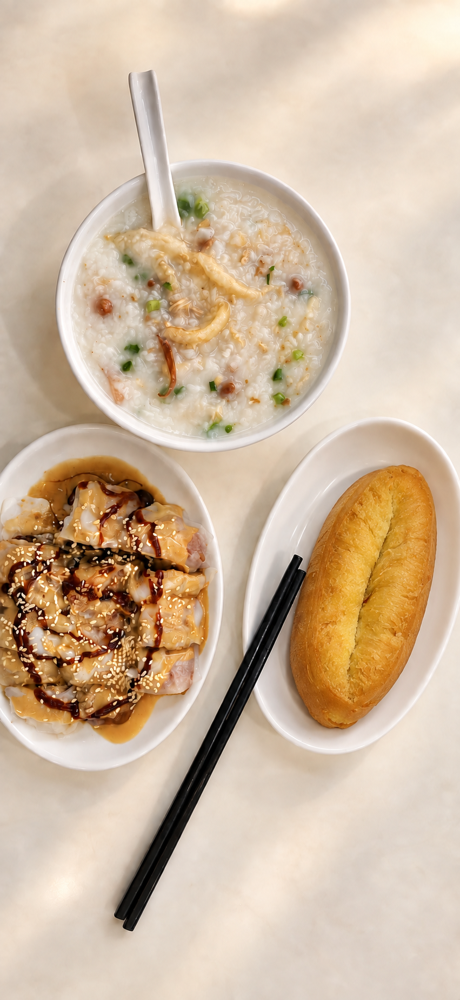

01
艇仔粥
層次豐富，一碗載著水上生活的記憶。
網上參考 HK$40 起香港醒來之前
城市還在睡，粥舖的一天已從水聲、米聲與爐火聲開始。
洗米、注水、看火。米粒在鍋裡散開，清水漸漸變得綿滑。慢，不是等待，而是讓每一粒米都交出自己的香氣。待第一班車駛過佐敦，熱氣已在窗邊升起。
一碗從水上來的粥
香港因海而生。昔日水上人家以艇為家、靠海為生，一碗熱粥，是勞作之後最踏實的安慰。
相傳艇仔粥起於珠江水域的艇上小食，後來隨人與船來到香港。魚片、花生、魷魚等各有口感，在滾粥裡聚成一碗豐足。它沒有單一版本，卻一直帶著流動生活的記憶。
「有些香港故事，不寫在岸上，而盛在碗裡。」
時間熬成的味道
粥的好味，不靠喧鬧。米、水、火候，加上落料一刻的判斷，已是全部。
讓米粒吸水，為往後的綿滑打好底子。
先催開米花，再守住穩定火候，熬出米香。
稀稠之間，靠經驗看、聽，也靠一點耐心。
客到才把鮮料放進滾粥，拿準火候與口感。

社區與人情味
一間街坊粥舖的溫度，常常不只在爐邊。有人趕上班，有人慢慢看報，有人替家人帶一碗回去。幾句招呼，一張熟悉的桌，便連成社區的日常。
富民粥品想守住的，是這種不張揚的款待：一碗粥熱，一個座位留給每位走進來的人。
來吃一碗熱粥
FUMIN CONGEE
營業時間由店方提供；公眾假期或特別日子的安排，請先致電確認。
香港故事，仍在冒煙。